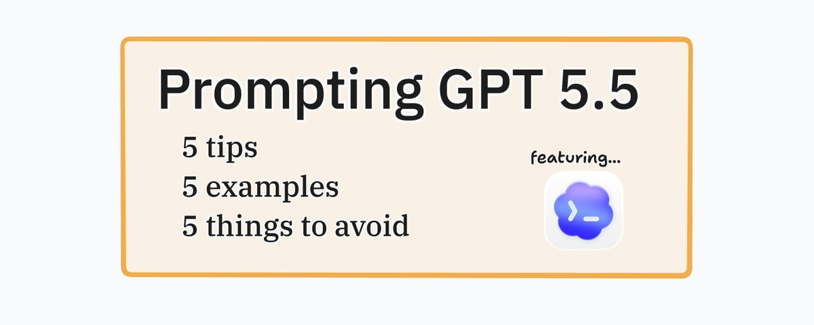
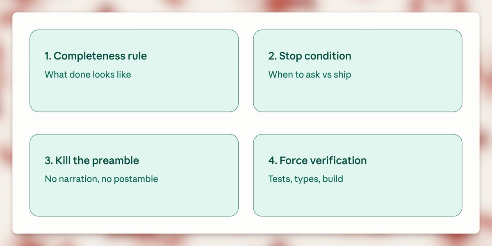

You are prompting GPT 5.5 wrong.

Source: OpenAI.
Prompting GPT 5.5 is A LOT different than how you prompted any model before. And GPT 5.5 itself can’t write good prompts for itself! See the screenshot below from @VictorTaelin
So, in this short article, I will be talking about how to create good prompts for GPT 5.5 so that you can do your work better&faster.
Btw before we go any further, this guide is for using GPT 5.5 inside Codex.
So here’s what changed. Older models needed you to walk them through the steps. First do this, then check that, then call this tool. GPT 5.5 reasons more efficiently and that kind of prompting actively makes it worse. It narrows the search space & you end up with mechanical answers.
The fix is the opposite of what people are doing. Describe the destination, not the route. Let the model figure out the path.
I’ve been changing how I prompt since 5.5 dropped. Here are the 5 moves with the highest hit rate, with examples you can paste in(or modify) directly.
1. Lead with the outcome
Stop telling the model HOW to solve the problem, instead tell it what the result should look like.
(btw the full examples are at the end)
Resolve the customer's issue end to end.
Success means:
- the eligibility decision is made from the available policy and account data
- any allowed action is completed before responding
- the final answer includes completed_actions, customer_message, and blockers
- if evidence is missing, ask for the smallest missing field2. Kill the preamble
Codex loves to narrate. "I’ll start by examining the file structure." "Let me first check the existing implementation." "Now I’ll proceed to make the changes."
You don’t need any of this. You can see what it’s doing. The preamble is noise & it eats latency before any real work happens.
Skip preambles. Do not narrate what you are about to do before doing it. Do not announce tool calls. Do not end with "Let me know if you'd like adjustments" or "Feel free to ask if you have questions."
When you finish, report what changed in 2-4 lines. File paths, what was modified, anything I need to know to use the change. That's it.3. Bias to action, finish what you start
Default Codex behavior on a hard task is to surface a plan and stop. We don’t want that. We want action. Get action:
Bias to action. If the request is clear and the next step is reversible, just do it. Do not stop at analysis, do not stop at a plan, do not stop after the first file change.
Persist until the task is fully handled end to end in this turn:
- carry changes through implementation, verification, and a clear summary
- if you hit a blocker, try one more reasonable approach before stopping
- only stop early if the next step is irreversible, destructive, or genuinely ambiguous
Unless I explicitly ask for a plan or a question, assume I want code shipped.(btw this is from the OpenAI Codex starter prompt)
4. Read in parallel, not one file at a time
Watch Codex on a real task. It reads package.json, waits, reads src/index.ts, waits, reads src/utils.ts, aaaand waits some more... Use this:
When you need to read multiple files, read them in parallel in a single batch, not sequentially.
Workflow:
1. Plan all the files you need before reading any
2. Issue one parallel batch of reads
3. Analyze together
4. Only do another batch if new unpredictable reads come up
Same for searches. If you need to grep for 3 patterns, run 3 searches in parallel. Sequential reads are only justified when one result genuinely determines the next.5. Make it actually verify
Run validation and tests. Don’t trust “this should work”::
After making changes, run the relevant validation:
- targeted tests for the behavior you changed
- typecheck and lint
- build, if the change touches anything build-time sensitive
- a quick smoke test on the running app if it's user-facing
If validation fails, fix it before reporting done. If validation can't run in this environment, say so & describe the next best check I can run myself.
"Done" means verified, not "code is written."Here are 3 simple rules to follow when prompting GPT 5.5:
- Add a completeness rule
- Add a stop condition
- Force verification.

Here are three examples you can adjust to your use case:
1. Building a feature
Build [feature]. Done = it works in the running app, has at least one test for the new behavior, types and lint clean, diff scoped to this change only.
Stop & ask only if: the next step is destructive, requirements are genuinely ambiguous, or you'd need to expand scope to 3+ unrelated files. Otherwise just ship it.
No preamble. Don't narrate before doing. When done, report changed files + what was modified in 2-4 lines.
Verify before reporting done: run affected tests, typecheck, lint. If anything fails, fix it. "Should work" is not done.2. Fixing a bug
Fix [bug]. Done = root cause is fixed (not the symptom), a test exists that fails before the fix and passes after, no other behavior regressed, diff scoped to the fix.
Stop & ask only if: the bug isn't reproducible from what I gave you, the root cause is in unexpected scope (different module, infra, dependency), or two plausible root causes exist and the wrong fix would mask the real bug.
No preamble. Don't walk me through your hypothesis before testing it. When done, report root cause + fix + what you verified in 3-5 lines.
Verify before reporting done: run the regression test, run the affected module's full suite, confirm the original repro is gone.3. Refactoring
Refactor [target]. Done = behavior is byte-identical before and after, all existing tests pass without modification, types and lint clean, diff scoped to the refactor.
Stop & ask if: you can't preserve behavior without changing a test (means the refactor changed semantics), the refactor naturally pulls in a 3rd+ file beyond what we discussed, or you find a real bug while refactoring (surface it separately, don't silently fix it inside the refactor diff).
No preamble. Don't explain the refactor plan before doing it. When done, report what moved, what's now where, and what was verified in 2-4 lines.
Verify before reporting done: run the FULL test suite (refactors break unexpected places), typecheck, build.4. Migration / upgrade
Migrate [target] from [old] to [new]. Done = the codebase compiles and runs on the new version, all existing tests pass without behavior changes, deprecation warnings from the migration are resolved (not suppressed), diff is scoped to the migration only.
Stop & ask if: the new version requires a behavior change that affects users (don't make that call alone), the migration touches config, infra, or build files in ways we didn't discuss, or you find code that depends on the old version's bugs (genuinely tricky - surface it, don't paper over it).
No preamble. Don't list every breaking change in the changelog before starting - read the changelog yourself and apply what's needed. When done, report what was migrated, what was left untouched and why, and any deprecation warnings still standing.
Verify before reporting done: run the full test suite (migrations break unexpected places), typecheck, build. If the project has integration or e2e tests, run those too - unit tests pass through migrations more often than you'd think.5. Adding tests to existing code
Add tests for [target]. Done = the tests exercise the actual behavior (not implementation details), they pass against the current code, they would fail if the behavior broke, coverage hits the meaningful branches not just the happy path.
Stop & ask if: the code is genuinely hard to test because of how it's structured (don't refactor it to make testing easier without checking), you find a real bug while writing tests (surface it separately, don't quietly fix it), or the existing tests already cover this and I missed it.
No preamble. Don't outline the test plan before writing - just write the tests. When done, report what's covered, what's intentionally not covered, and anything you found while writing them.
Verify before reporting done: run the new tests (must pass), then mutate the code under test in a small way and rerun (the tests must fail - if they don't, they're testing the wrong thing). Run the full suite to make sure nothing else broke.And here are 5 things to avoid:
- Telling Codex HOW to solve it instead of what done looks like
- Asking GPT to create a prompt for itself
- Using the same chat for more than one task
- Sequential file reads on multi-file tasks (waste of latency)
- Trusting "this should work" without running the tests (never do this)
Alright, if you take one thing from this: before you reach for that Extra High button, rewrite the prompt using the tips above. (and give me a follow)
Read more: developers.openai.com/api/docs/guides/prompt-guidance